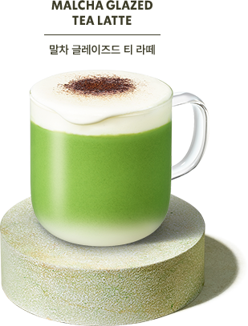
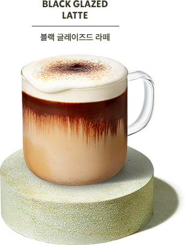
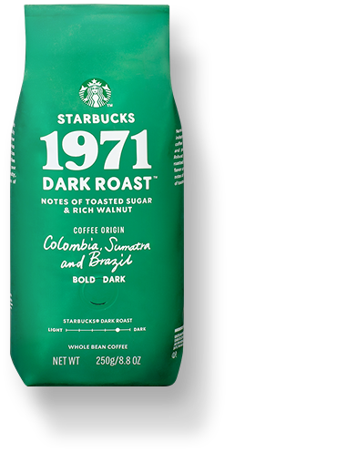
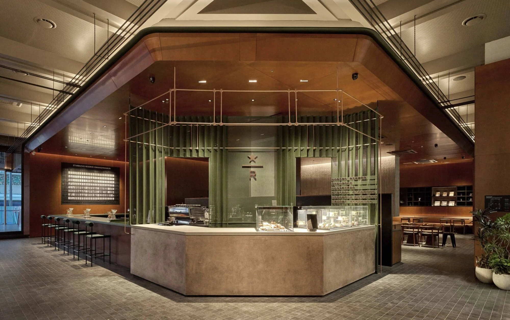

A MOMENT, JUST FOR YOU
A little pause.
A better day.
잠깐의 여유가, 더 좋은 하루로.
당신의 일상에 부드러운 한 잔을 더해보세요.


부드러운 달콤함, 블랙 글레이즈드 라떼
WHOLE BEAN COFFEE250 g

FROM BEAN TO YOUR CUP
좋은 하루의 시작에는
좋은 커피가 있으니까.
한 잔의 커피에 담긴 깊이 있는 풍미.
취향에 맞는 원두를 발견하고,
나만의 커피 시간을 완성해보세요.
STARBUCKS REWARDS
좋아하는 한 잔이,
더 특별한 순간으로.
커피를 즐기는 일상에 리워드의 즐거움을 더하세요.
당신의 하루,
가장 가까운 곳에서.
혼자만의 여유도, 함께하는 대화도.
지금 머물고 싶은 스타벅스를 찾아보세요.
